Terrain
Fractal terrain for a 4 × 4 km area on a 160 × 160 grid of 25 m cells. Elevation runs from 48 m (light) to 149 m (dark), higher in the north, so streams drain south.
India's data centres use billions of litres of water. ThirstMap generates terrain images, simulates where the water flows, and asks AI models where a data centre's wastewater goes. Because the code builds the landscape, it already knows every answer.
Watch the 90-second video Code, dataset and full results Take the human test (32 questions, about 15 minutes) One-page summary (PDF) Tough questions, answered Run it in Colab
| Model | Correct, with the image chance 13% | Without the image | p vs guessing | Both halves of a pair right | Reads the labels |
|---|---|---|---|---|---|
| Qwen2.5-VL-3B 3B | 17% | 14% | 0.15 | 0% | 69% |
| Qwen2-VL-2B 2B | 9% | 9% | 0.95 | 0% | 94% |
| SmolVLM-256M 0.26B | 8% | 10% | 0.97 | 0% | 0% |
| SmolVLM2-2.2B 2.2B | 8% | 12% | 0.97 | 0% | 69% |
130 questions per model, the same for every model, plus 30 before-and-after pairs and 16 reading checks. Free open-weight models from Hugging Face, run locally with greedy decoding. Every reply on this page is the model's real, unedited output.
Fine-tuning. SmolVLM-256M trained on 300 ThirstMap tasks went from 10% to 19% on 150 questions from scenes it never saw, and now scores 19% with the image against 11% without it. The dataset can teach the skill, a little.
| Model | Correct | Chance | p vs guessing | Both halves of a pair right |
|---|---|---|---|---|
| gemini-3.5-flash | 76% (57/75) | 14% | 4e-33 | 43% of 7 |
| gemini-3.1-flash-lite | 49% (37/75) | 14% | 6e-13 | 0% of 7 |
| gemini-3.5-flash-lite | 40% (30/75) | 14% | 4e-08 | 0% of 7 |
| Qwen2.5-VL-3B | 12% (9/75) | 14% | 0.8 | 0% of 7 |
| Qwen2-VL-2B | 5% (4/75) | 14% | 1 | 0% of 7 |
A free Gemini key allows 20 requests per model per day, so every question about an image went in one request, identically for every model. The best model, gemini-3.5-flash, got both the original and its changed twin right in only 3 of 7 pairs; every other model got none. Pick “Frontier check” in the task browser to see every reply.
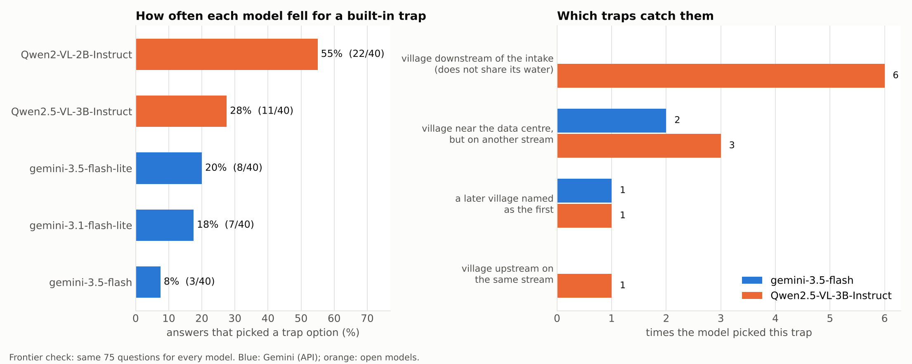
One real scene from the dataset (level4_seed48947), followed through every step of the pipeline.
Fractal terrain for a 4 × 4 km area on a 160 × 160 grid of 25 m cells. Elevation runs from 48 m (light) to 149 m (dark), higher in the north, so streams drain south.
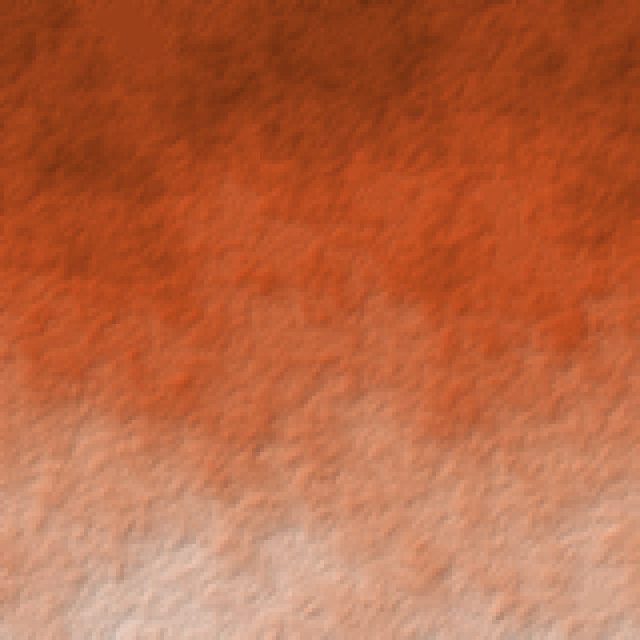
Hollows are filled first (priority-flood), then every cell sends its water to its steepest downhill neighbour (D8 routing). Counting the cells upstream of each point draws the streams: 1,465 stream cells, 935 cells of ponded water, and up to 5.6 km² draining through one point.
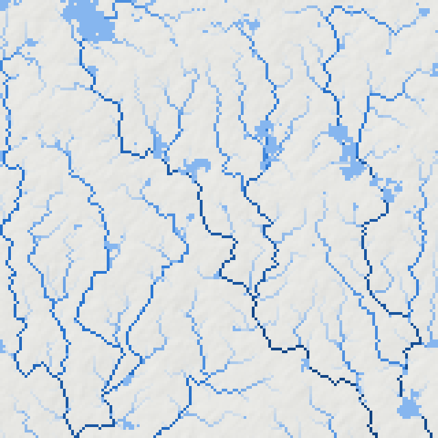
The script places data centre DC-1 and its outfall O, 7 villages, 4 candidate wetlands and a water intake I. Traps are built in: V6 is close to the data centre but on another stream (yellow). A model that answers by distance instead of by flow picks it.
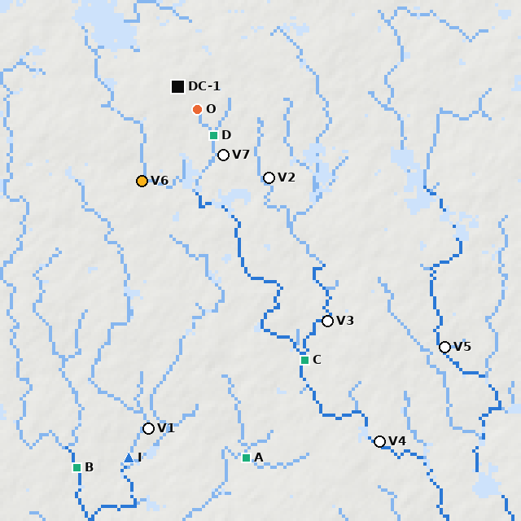
Tracing downhill from O gives the reference answer. The question: “Cooling-tower wastewater from DC-1 enters the stream at outfall O. Which villages would receive this water downstream? List all.” The answer: V4, V7. No model and no person is involved.
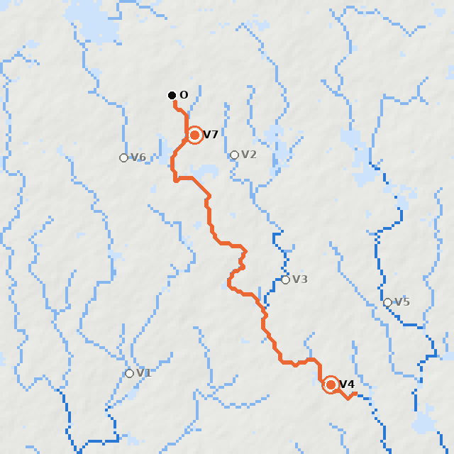
pysheds, a separate hydrology library, recomputes the flow. It agrees on 99.73% of cells (red: the 70 cells that differ), traces the same path (blue under orange) and gives the same answer to 10/10 questions. A question whose answers disagree is dropped, never edited.
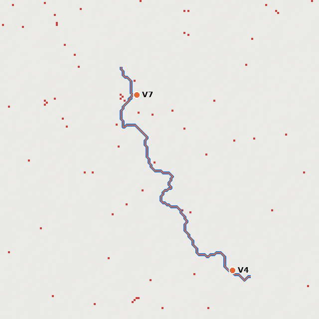
The scene is rendered as a satellite-style image, a topographic map and a thermal image. One answer key serves all three, and each question is asked only in the styles that show its evidence.
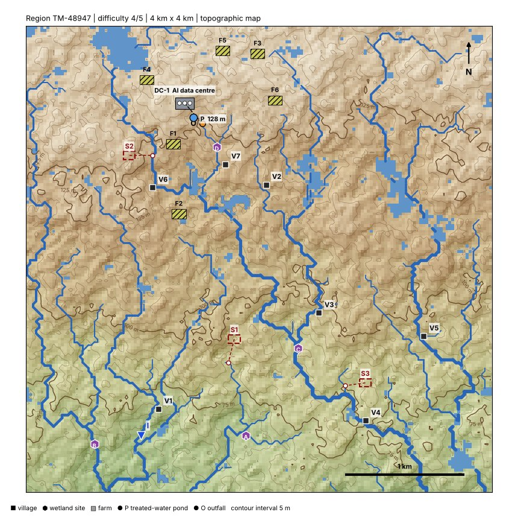
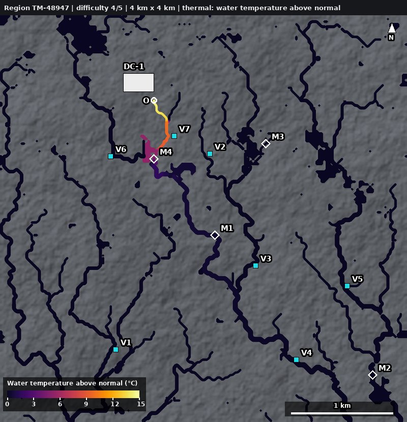
Before release, the answer path is checked in the image the model will see. Each dot is a path cell; green means water is visible there (100% of 137 cells). Labels must not overlap or leave the frame. Rebuilt from its seed, this image is pixel-identical to the dataset copy.
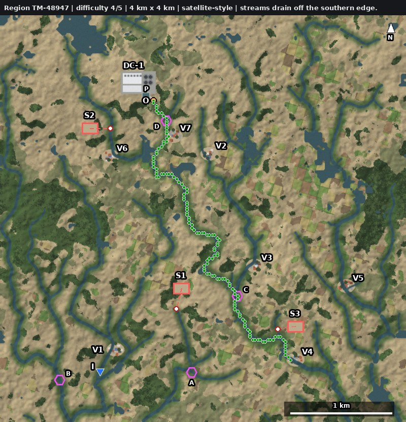
The twin changes one thing: the wastewater pipe is rerouted: outfall O moves to a different stream. Only 0.64% of pixels change (outlined in pink). The correct answer moves from V4, V7 to V4, V6, so only a model that looks can be right on both.
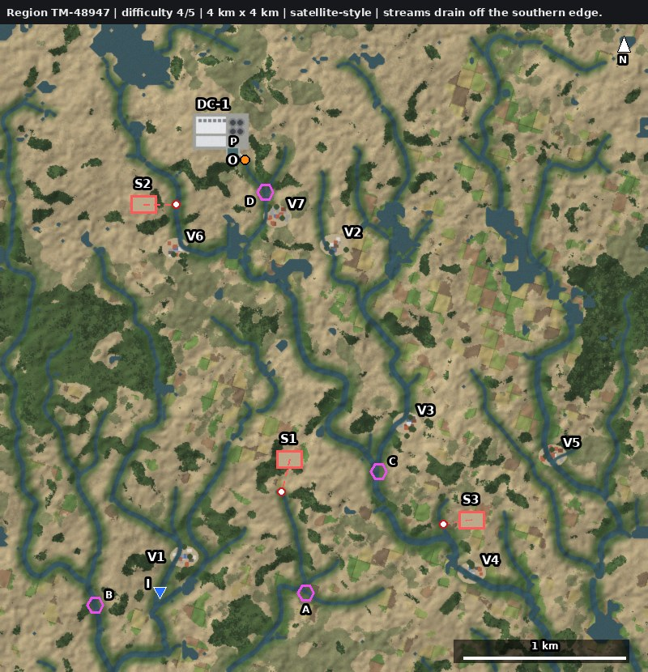
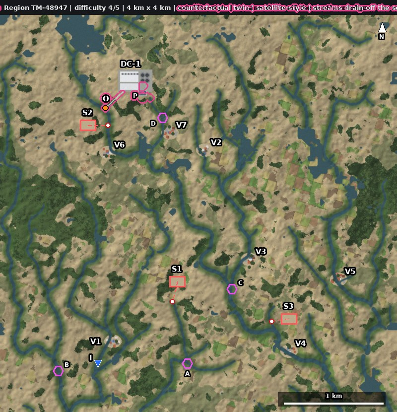
Each reply is parsed and compared with the key automatically. Wrong answers are tagged with the trap they fell for. These are the real replies of the four open models to this scene and its twin:
Answer 6 questions the way the models did, then check: the page scores you with the same rules as the models and shows what gemini-3.5-flash answered. These questions are not in the human test.
The best frontier model’s answers (gemini-3.5-flash) drawn on the exact images it saw, for a scene and its twin. Blue is the true water path; green, red and amber mark right, wrong and missed answers.
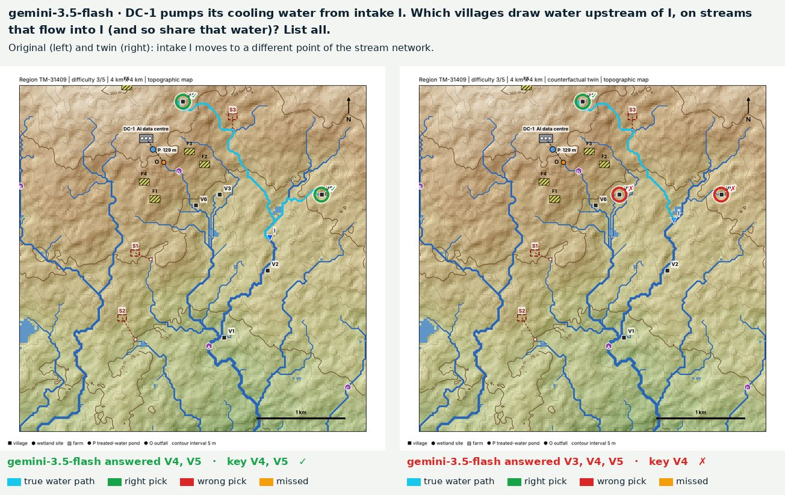
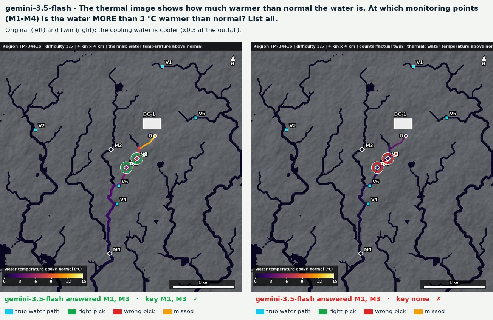
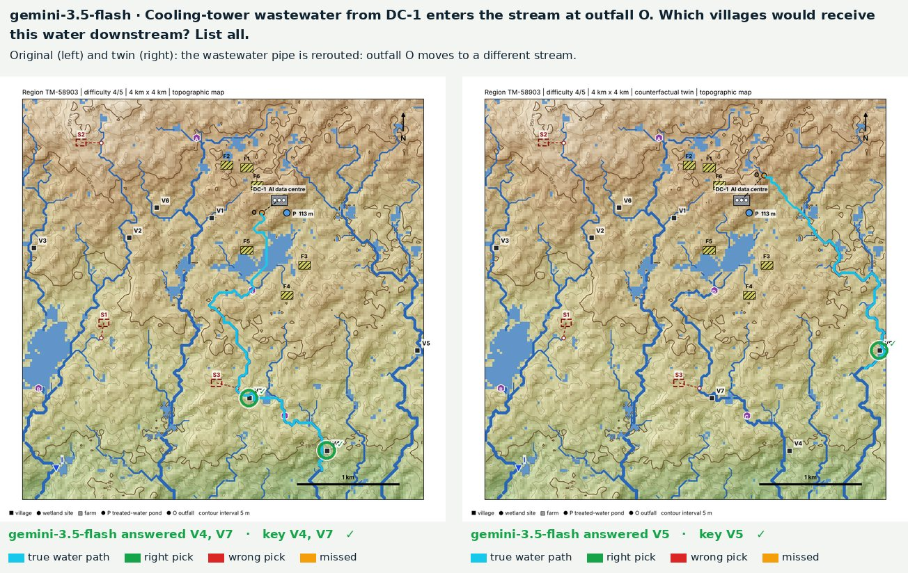
Each card shows the image the model saw, the question, the answer key from the simulation, and every model's real reply, scored automatically. Grey rows are offline baselines for scale: one returns the answer key, one guesses at random. Press “Show answer key” to see the water path.